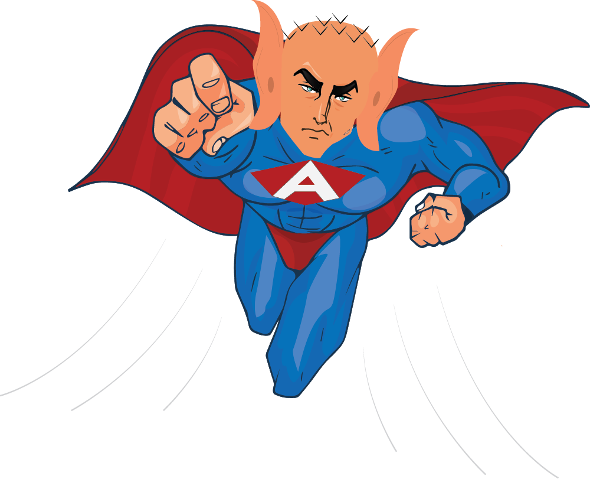
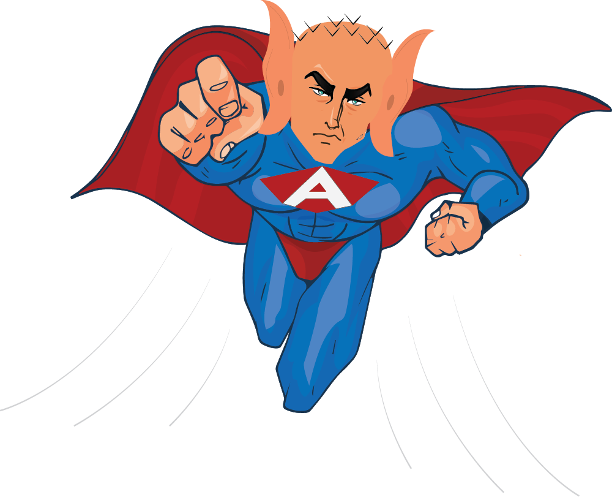

AboutMe
Hello there I am Wilbrone, a Graphic Communication specialist. I work in helping communication be made through the different
graphical presentations. I also work as a Software Devoloper (Front-End). Core goals being functionality and interractivity.
I recieved my BSc. in Graphic Communication and Advertisement from Moi University, where I studied Graphic Desgn, Animation and Communication.
I have worked as an intern Front End Developer at Xelpha, to build hospital based applications. The application I built using Angular frame work with Typscript.
I also helped with User Experience (UX). I used PhotoShop to create the different screen models and used invision for the presentation.
I decided to join a programming class to help me enhance on my self taught skills of programming. I also joined the class to get to learn new and other programing languages that are used for Software Development both Front-End & Back-End developments. I decided to join a class to get to fine tune my skills and learn the basic and get a better understanding of what programming is and how to go about the different problems or obstacles that I may come accross while in the field of programming. I decided to join the class to get to network and meet more people who are in the field and learn something from them and also share my knowledge.
Having done my BSc. in Graphics Communication and Advert, I joined this class to get to enhance and build on my career of UI/UX
My Hobbies & Skills
- Drawing
- Playing Basketball
- Swimming
- Reading
- Animation